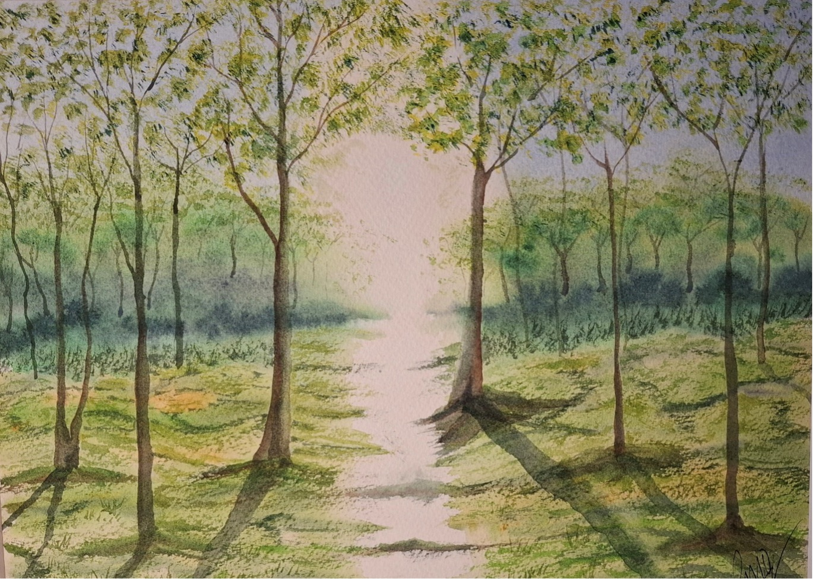

Spring Breaks
A watercolour painting inspired by the early spring light shining through the trees on Thurstaston Common.

Artwork details
Spring Breaks is an original watercolour painting by Richard Oldfield, inspired by the early spring light filtering through the trees on Thurstaston Common.
The painting captures the gentle brightness of the changing season and the atmosphere of a woodland landscape coming to life in spring.
Status: Sold
Price: Sold
- Medium: Watercolour
- Size: 50cm x 40cm
- Subject: Thurstaston Common, Wirral
- Artist: Richard Oldfield
- Availability: Original artwork sold
About this painting
Spring Breaks reflects Richard's interest in capturing the natural beauty of familiar landscapes and the changing seasons.
Inspired by Thurstaston Common on the Wirral, the watercolour explores the effect of early spring sunlight shining through the trees, creating a sense of warmth, space and renewal.
Although the original painting has been sold, Richard welcomes enquiries about commissions inspired by similar woodland scenes, landscapes and favourite places.
You may also like
Explore more original landscape and nature-inspired watercolours.